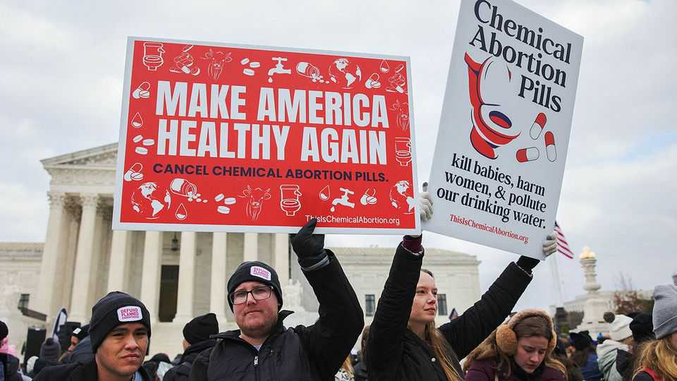

The anti-abortion crusade’s new fight
With legal abortions on the rise, an aggressive battle is beginning

Jul 30th 2026
ANTI-ABORTION ACTIVISTS once longed for the circumstances of 2026. Republicans control the Senate, House and White House. The Supreme Court is controlled by conservative justices and has overturned Roe v Wade, which had enshrined the right to abortion. Yet there are now more abortions in America than when Roe stood, as a rising number of women have abortions by pills received by post. Allowing women to choose an abortion, particularly early in a pregnancy, is consistently popular with voters.
For those defending the right to an abortion, this is an unexpected success. For those who want to end abortion, it is inspiring a new fight. Lawyers are seeking to block access to abortion pills by post. Some politicians want to criminalise the women who take them, breaking a long-standing taboo for a movement once eager to win broad support. That it is now being meaningfully debated shows the depth of frustration with the status quo.
Abortion pills are “the biggest front for the pro-life community”, says Erik Baptist of the Alliance Defending Freedom, a law firm which helped argue the case that overturned Roe. Approved in 2000, the pills are used to end a pregnancy within its first ten weeks. Their use climbed rapidly after rules for their administration at home were eased during the covid pandemic.
Four years ago, in the wake of the ruling overturning Roe, Massachusetts passed the first so-called telemedicine “shield” law, which gave providers of abortion pills in states without bans protection from criminal and civil charges. Seven states have followed. According to data from the Society of Family Planning, a non-profit group, by December 2025 almost 15,000 abortions were provided each month under shield laws. “In pro-life states such as Louisiana,” complains Mr Baptist, “they’re encountering 800 to 900 abortions each month, when that number should be zero.”
So far legal challenges have been slow to progress. Louisiana has tried to extradite doctors from New York and California, but both requests have been blocked by the states’ Democratic governors, who refused to sign warrants. Ken Paxton, Texas’s attorney-general, who is running for the Senate, also sued a New York doctor, unsuccessfully. Although a case against shield laws is expected to escalate eventually to the Supreme Court, “some of [the cases] have just been caught in the traps that shield law has designed,” says Greer Donley, a professor at the University of Pittsburgh and one of the “proud” architects of the laws. For example, the constitution’s extradition clause was written to apply to fugitives who fled from one state to another, not to a local travelling no further than a nearby post office.
Some anti-abortion activists are concluding that it may prove faster and more effective to go after the medicines directly. In 2025 Louisiana sued the Food and Drug Administration (FDA), claiming it was reckless when it allowed mifepristone, one of the two drugs used in a medical abortion, to be dispensed remotely. A federal appeals court will hear the case in September.
In the meantime, campaigners want the White House to help. After much delay, the FDA is directly reviewing mifepristone’s safety record (complications requiring hospital admission have occurred in 0.3-0.9% of cases). Even if remote mifepristone were unavailable, doctors could still prescribe misoprostol, approved for treating ulcers and whose use for abortion is hard to restrict. Results from clinical studies vary, but misoprostol seems only marginally less effective at ending a pregnancy. It is, however, more likely to cause side-effects, such as pain and bleeding.
The White House could do more. Todd Blanche, the nominee for attorney-general, has agreed to consider enforcing the Comstock Act, an old anti-obscenity law, to ban the posting of any abortifacients. But the administration may not act. The “big surprise about Trump 2.0,” observes Ms Donley, “is that it seems like he actually meant what he said on the campaign trail”, that he would leave abortion policy to states. This has disappointed many anti-abortion advocates, who have vowed to back candidates who want more forceful action.
Having failed to choke off supply, parts of the anti-abortion movement are turning to demand. “The woman is now the only actor here,” says Mark Corral, an anti-abortion activist in South Carolina. “Who else are you going to hold accountable?” Richard Cash, a Republican state senator there, would ban abortion from conception; women who abort would face up to two years in prison. His proposal cleared the state’s Senate health committee and will come up for a broader vote next year. He would prefer to treat abortion as homicide, carrying the death penalty, but he acknowledges that is politically infeasible for now. “A law without a penalty is just a suggestion,” he explains.
Other radical ideas are gaining traction, even if they are further from the finish line. Abortion “abolitionists” are advocating for “equal protection” bills to give a fetus the same constitutional rights as a person under the 14th Amendment. According to the Foundation to Abolish Abortion, an advocacy group, in 2024 ten such bills were introduced in eight states, backed by 58 lawmakers. This year that rose to 16 bills in 13 states with 130 sponsors. In Oklahoma and Idaho, a third of state senators signed on. In June, Texas Republicans adopted language in their official party platform to give fetuses equal-protection rights, and called for repealing provisions giving immunity from prosecution for abortions.
As politicians debate new laws, a few prosecutors are testing the limits of existing ones. In January, a woman in Kentucky who took abortion pills and buried her fetus was charged with homicide, abuse of a corpse and evidence tampering. Two months later, prosecutors charged a Georgia woman who miscarried in hospital with murder, citing an account that she told nurses she took mifepristone. According to Pregnancy Justice, a non-profit, nine women have faced charges of this sort since Roe was overturned. Some cases have been dropped; others are still pending.
The rise of abolitionism has exposed a generational divide. For decades, pro-lifers built their movement around the idea of “loving them both”, the mother and unborn baby. Those advocates now argue that criminalising women would squander their political progress. “It would cause us to lose ground with voters,” says Amy O’Donnell of Texas Alliance for Life, one of the state’s largest anti-abortion groups.
Bradley Pierce, the abolitionists’ most influential activist, reckons Christians are hungry for something that works. “We need to love our pre-born neighbours more than we love a seat at the table,” he says. “And we need to fear God more than we fear the Democrats.”■
Stay on top of American politics with The US in brief, our daily newsletter with fast analysis of the most important political news, and Checks and Balance, a weekly note that examines the state of American democracy and the issues that matter to voters.